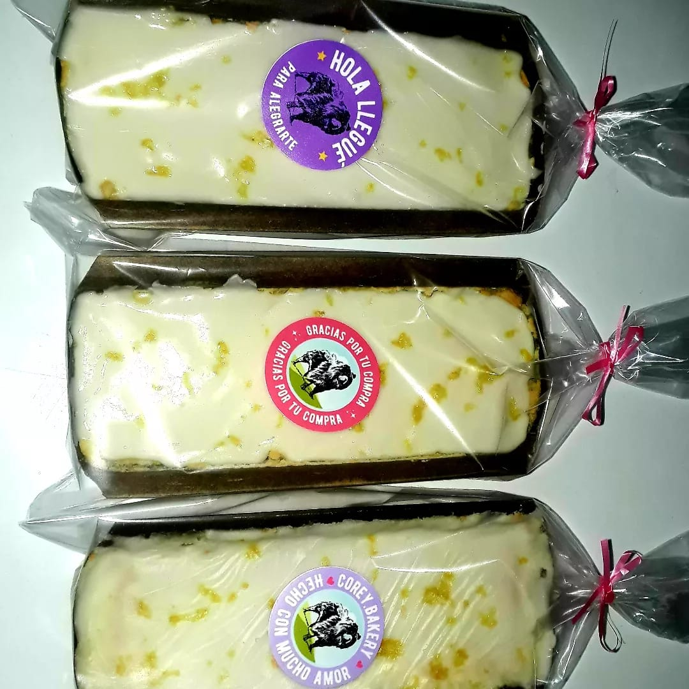
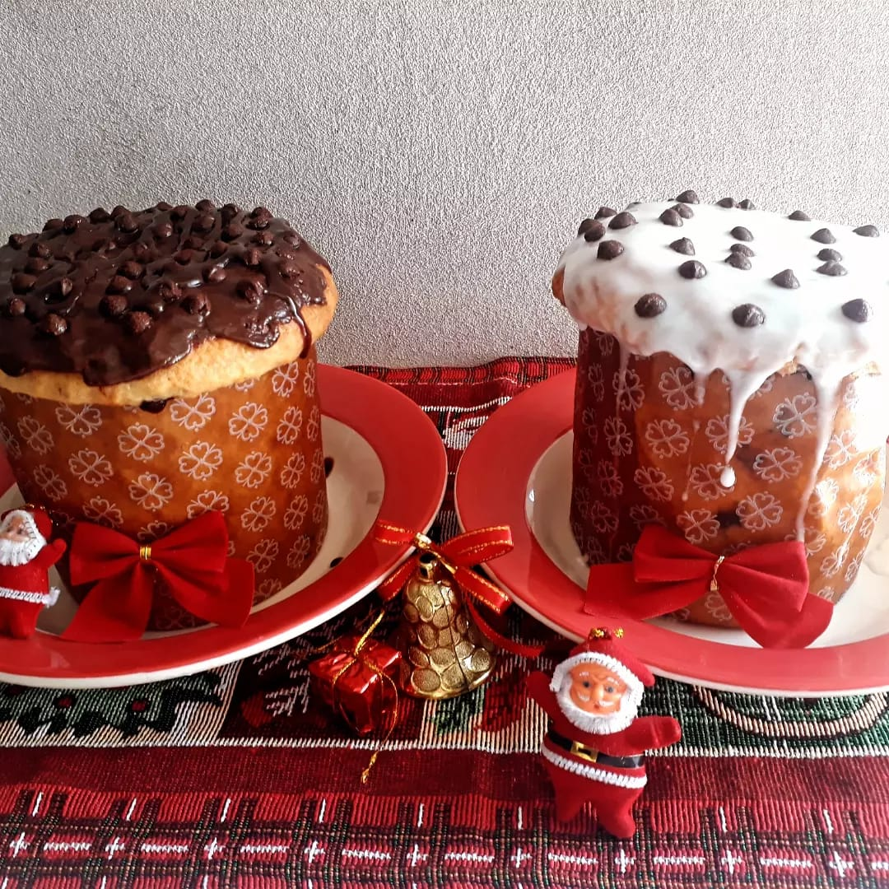
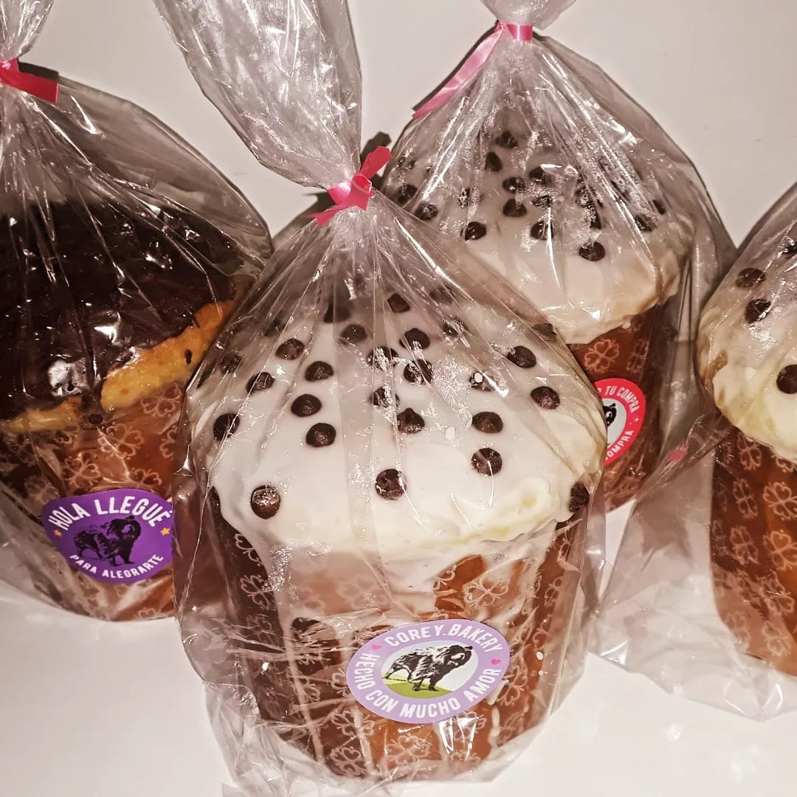
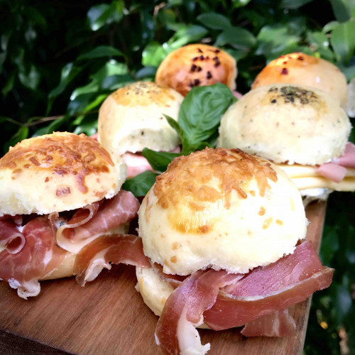
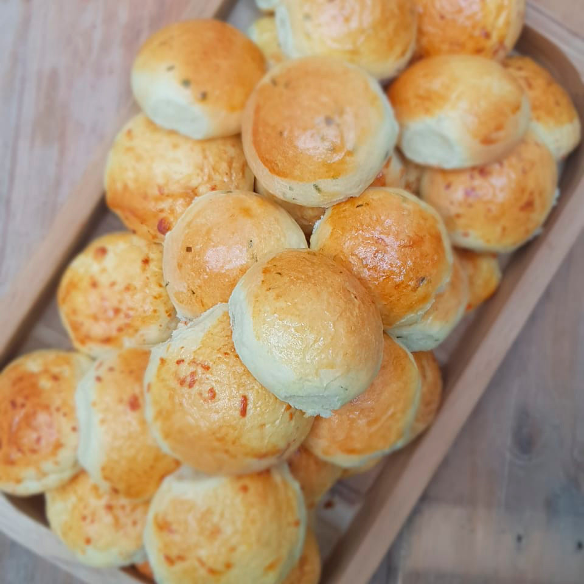

Últimas creaciones!
Budin de Limón:
Es un bizcochuelo suave y esponjoso con un gustito fresco y cítrico gracias al limón. Se hace con ingredientes básicos como harina, azúcar, huevos, manteca, leche y, obviamente, jugo y ralladura de limón. Se suele cocinar en un molde de budín y, una vez listo, se le puede agregar un glaseado de limón que se prepara mezclando jugo de limón con azúcar impalpable. Este glaseado le da un toque dulce y ácido al budín. Es perfecto para acompañar el mate o el cafecito de la tarde, y es ideal tanto para el día a día como para compartir en alguna ocasión especial.

- 
Pan dulce:
El pan dulce es un clásico infaltable en las mesas durante las fiestas de Navidad y Año Nuevo. Este delicioso pan, con una textura esponjosa y un sabor suave y dulce, puede estar repleto de frutas confitadas, pasas y, en algunas versiones, nueces o almendras, aunque nosotros decidimos hacerlos con chips de chocolate. Es un verdadero símbolo de celebración y tradición familiar.
Nuestra versión es un pan dulce repleto de chips de chocolate, con un glaseado nuevamente de chocolate que puede ser blanco o negro. Un manjar!
- 
- 
Tambien hacemos cosas saladas!
Pancitos saborizados
Los pancitos rellenos son una deliciosa opción tanto para reuniones informales como para picnics, y se han convertido en un favorito en muchos hogares argentinos. Estos panes, pequeños y esponjosos, se destacan por su versatilidad, ya que se pueden rellenar con una amplia variedad de ingredientes, desde jamón y queso hasta espinacas y ricota, e incluso opciones dulces como dulce de leche o chocolate. Son perfectos para servir como aperitivo, merienda o para llevar a la canasta del picnic.
- 
- 